22 Dimension reduction
A typical machine learning task involves working with a large number of predictors, which makes visualization somewhat challenging. We have shown methods for visualizing univariate and paired data, but plots that reveal relationships between many variables are more complicated in higher dimensions. For example, to compare each of the 784 features in our predicting digits example, we would have to create 306,936 scatterplots. Creating one single scatterplot of the data is impossible due to the high dimensionality.
Here we describe powerful techniques useful for exploratory data analysis, among other things, generally referred to as dimension reduction. The general idea is to reduce the dimension of the dataset while preserving important characteristics, such as the distance between features or observations. With fewer dimensions, visualization then becomes more feasible. The general technique behind it all, the singular value decomposition, is also useful in other contexts. Principal component analysis (PCA) is the approach we will be showing. We will motivate the ideas with a simple illustrative example and present some mathematical concepts needed to understand PCA. We finish the chapter by demonstrating the use of PCA in two more complex datasets.
22.1 Motivation: preserving distance
We consider an example with twin heights. Some pairs are adults, the others are children. Here we simulate 100 two-dimensional points that represent the number of standard deviations each individual is from the mean height. Each point is a pair of twins. We use the mvrnorm function from the MASS package to simulate bivariate normal data.
A scatterplot quickly reveals that the correlation is high and that there are two groups of twins, the adults (upper right points) and the children (lower left points):
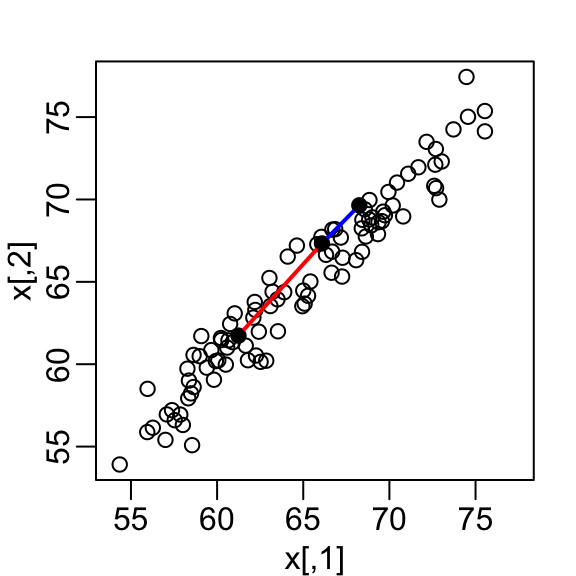
Our features are \(n\) two-dimensional points, the two heights. For illustrative purposes, we will pretend that visualizing two dimensions is too challenging and we want to explore the data through a histogram of a one-dimensional variable. We therefore want to reduce the dimensions from two to one, but still be able to understand important characteristics of the data, in particular that the observations cluster into two groups: adults and children. To show the ideas presented here are generally useful, we will standardize the data so that observations are in standard units rather than inches:
In the figure above, we show the distance between observation 1 and 2 (blue), and observation 1 and 51 (red). Note that the blue line is shorter, which implies that 1 and 2 are closer.
We can compute these distances using dist:
This distance is based on two dimensions and we need a distance approximation based on just one.
Let’s start with the naive approach of simply removing one of the two dimensions. Let’s compare the actual distances to the distances computed with just the first dimension:
z <- x[,1]To make the distances comparable, we divide the sum of squares by the number of dimensions being added. So for the two dimensional case, we have:
\[ \sqrt{ \frac{1}{2} \sum_{j=1}^2 (x_{1,j}-x_{2,j})^2 }, \]
To make the distances comparable, we divide by \(\sqrt{2}\):

This one number summary does ok at preserving distances, but, can we pick a one-dimensional summary that improves the approximation?
If we look back at the scatterplot and visualize a line between any pair of points, the length of this line is the distance between the two points. These lines tend to go along the direction of the diagonal. We will learn that we can rotate the points in a way that preserve the distance between points, while increasing the variability in one dimension and reducing it on the other. Using this method, we keep more of the information about distances in the first dimension. In the next section, we describe a mathematical approach that permits us to find rotations that preserve distance between points. We can then find the rotation that maximizes the variability in the first dimension.
22.2 Rotations
Any two-dimensional point \((x_1, x_2)^\top\) can be written as the base and height of a triangle with a hypotenuse going from \((0,0)^\top\) to \((x_1, x_2)^\top\):
\[ x_1 = r \cos\phi, \,\, x_2 = r \sin\phi \]
with \(r\) the length of the hypotenuse and \(\phi\) the angle between the hypotenuse and the x-axis.
To rotate the point \((x_1, x_2)^\top\) around a circle with center \((0,0)^\top\) and radius \(r\) by an angle \(\theta\) we simply change the angle in the previous equation to \(\phi + \theta\):
\[ z_1 = r \cos(\phi+ \theta), \,\, z_2 = r \sin(\phi + \theta) \]
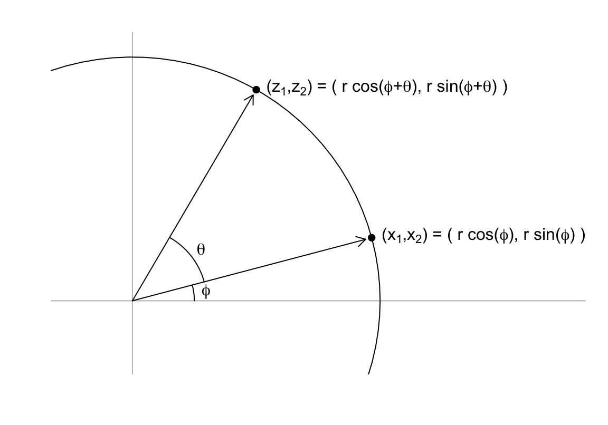
We can use trigonometric identities to rewrite \((z_1, z_2)\) as follows:
\[ \begin{aligned} z_1 = r \cos(\phi + \theta) = r \cos \phi \cos\theta - r \sin\phi \sin\theta = x_1 \cos(\theta) - x_2 \sin(\theta)\\ z_2 = r \sin(\phi + \theta) = r \cos\phi \sin\theta + r \sin\phi \cos\theta = x_1 \sin(\theta) + x_2 \cos(\theta) \end{aligned} \]
Now we can rotate each point in the dataset by simply applying the formula above to each pair \((x_{i,1}, x_{i,2})^\top\). Here is what the twin standardized heights look like after rotating each point by \(-45\) degrees:
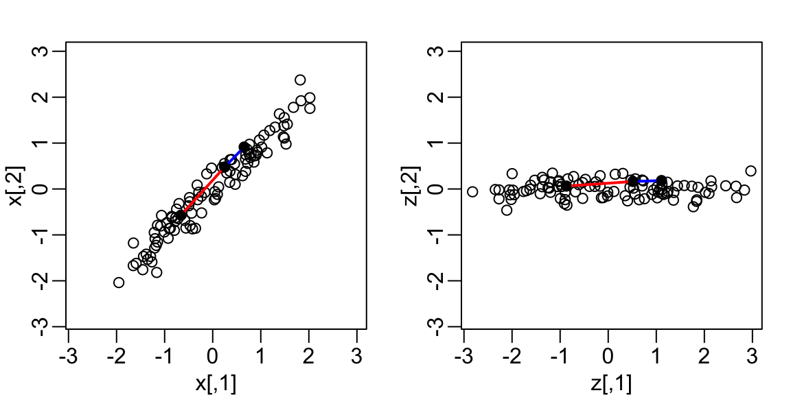
Note that while the variability of \(x_1\) and \(x_2\) are similar, the variability of \(z_1\) is much larger than the variability of \(z_2\). Also, notice that the distances between points appear to be preserved. In the next sections, we show mathematically that this in fact the case.
22.3 Linear transformations
Any time a matrix \(\mathbf{X}\) is multiplied by another matrix \(\mathbf{A}\), we refer to the product \(\mathbf{Z} = \mathbf{X}\mathbf{A}\) as a linear transformation of \(\mathbf{X}\). Below, we show that the rotations described above are a linear transformation. To see this, note that for any row \(i\), the first entry was:
\[ z_{i,1} = a_{1,1} x_{i,1} + a_{2,1} x_{i,2} \]
with \(a_{1,1} = \cos\theta\) and \(a_{2,1} = -\sin\theta\).
The second entry was also a linear transformation:
\[z_{i,2} = a_{1,2} x_{i,1} + a_{2,2} x_{i,2}\]
with \(a_{1,2} = \sin\theta\) and \(a_{2,2} = \cos\theta\).
We can write these equations using matrix notation:
\[ \begin{pmatrix} z_1\\z_2 \end{pmatrix} = \begin{pmatrix} a_{1,1}&a_{1,2}\\ a_{2,1}&a_{2,2} \end{pmatrix}^\top \begin{pmatrix} x_1\\x_2 \end{pmatrix} \]
An advantage of using linear algebra is that we can write the transformation for the entire dataset by saving all observations in a \(N \times 2\) matrix:
\[ \mathbf{X} \equiv \begin{bmatrix} \mathbf{x_1}^\top\\ \vdots\\ \mathbf{x_n}^\top \end{bmatrix} = \begin{bmatrix} x_{1,1}&x_{1,2}\\ \vdots&\vdots\\ x_{n,1}&x_{n,2} \end{bmatrix} \]
We can then obtain the rotated values \(\mathbf{z}_i\) for each row \(i\) by applying a linear transformation of \(X\):
\[ \mathbf{Z} = \mathbf{X} \mathbf{A} \mbox{ with } \mathbf{A} = \, \begin{pmatrix} a_{1,1}&a_{1,2}\\ a_{2,1}&a_{2,2} \end{pmatrix} = \begin{pmatrix} \cos \theta&\sin \theta\\ -\sin \theta&\cos \theta \end{pmatrix} . \]
If we define:
We can write code implementing a rotation by any angle \(\theta\) using linear algebra:
The columns of \(\mathbf{A}\) are referred to as directions because if we draw a vector from \((0,0)\) to \((a_{1,j}, a_{2,j})\), it points in the direction of the line that will become the \(j-th\) dimension.
Another advantage of linear algebra is that if we can find the inverse matrix of \(\mathbf{A}^\top\), we can convert \(\mathbf{Z}\) back to \(\mathbf{X}\) again using a linear transformation.
In this particular case, we can use trigonometry to show that:
\[ x_{i,1} = b_{1,1} z_{i,1} + b_{2,1} z_{i,2}\\ x_{i,2} = b_{1,2} z_{i,1} + b_{2,2} z_{i,2} \]
with \(b_{2,1} = \cos\theta\), \(b_{2,1} = \sin\theta\), \(b_{1,2} = -\sin\theta\), and \(b_{2,2} = \cos\theta\).
This implies that:
\[ \mathbf{X} = \mathbf{Z} \begin{pmatrix} \cos \theta&-\sin \theta\\ \sin \theta&\cos \theta \end{pmatrix}. \] Note that the transformation used above is actually \(\mathbf{A}^\top\) which implies that
\[ \mathbf{Z} \mathbf{A}^\top = \mathbf{X} \mathbf{A}\mathbf{A}^\top\ = \mathbf{X} \]
and therefore that \(\mathbf{A}^\top\) is the inverse of \(\mathbf{A}\). This also implies that all the information in \(\mathbf{X}\) is included in the rotation \(\mathbf{Z}\), and it can be retrieved via a linear transformation. A consequence is that for any rotation the distances are preserved. Here is an example for a 30 degree rotation, although it works for any angle:
The next section explains why this happens.
22.4 Orthogonal transformations
Recall that the distance between two points, say rows \(h\) and \(i\) of the transformation \(\mathbf{Z}\), can be written like this:
\[ ||\mathbf{z}_h - \mathbf{z}_i|| = (\mathbf{z}_h - \mathbf{z}_i)^\top(\mathbf{z}_h - \mathbf{z}_i) \]
with \(\mathbf{z}_h\) and \(\mathbf{z}_i\) the \(p \times 1\) column vectors stored in the \(h\)-th and \(i\)-th rows of \(\mathbf{X}\), respectively.
Remember that we represent the rows of a matrix as column vectors. This explains why we use \(\mathbf{A}\) when showing the multiplication for the matrix \(\mathbf{Z}=\mathbf{X}\mathbf{A}\), but transpose the operation when showing the transformation for just one observation: \(\mathbf{z}_i = \mathbf{A}^\top\mathbf{x}_i\)
Using linear algebra, we can rewrite the quantity above as:
\[ ||\mathbf{z}_h - \mathbf{z}_i|| = ||\mathbf{A}^\top \mathbf{x}_h - \mathbf{A}^\top\mathbf{x}_i||^2 = (\mathbf{x}_h - \mathbf{x}_i)^\top \mathbf{A} \mathbf{A}^\top (\mathbf{x}_h - \mathbf{x}_i) \]
Note that if \(\mathbf{A} \mathbf{A} ^\top= \mathbf{I}\), then the distance between the \(h\)th and \(i\)th rows is the same for the original and transformed data.
We refer to transformation with the property \(\mathbf{A} \mathbf{A}^\top = \mathbf{I}\) as orthogonal transformations. These are guaranteed to preserve the distance between any two points.
We previously demonstrated our rotation has this property. We can confirm using R:
Notice that \(\mathbf{A}\) being orthogonal also guarantees that the total sum of squares (TSS) of \(\mathbf{X}\), defined as \(\sum_{i=1}^n \sum_{j=1}^p x_{i,j}^2\) is equal to the total sum of squares of the rotation \(\mathbf{Z} = \mathbf{X}\mathbf{A}^\top\). To illustrate, observe that if we denote the rows of \(\mathbf{Z}\) as \(\mathbf{z}_1, \dots, \mathbf{z}_n\), then sum of squares can be written as:
\[ \sum_{1=1}^n ||\mathbf{z}_i||^2 = \sum_{i=1}^n ||\mathbf{A}^\top\mathbf{x}_i||^2 = \sum_{i=1}^n \mathbf{x}_i^\top \mathbf{A}\mathbf{A}^\top \mathbf{x}_i = \sum_{i=1}^n \mathbf{x}_i^\top\mathbf{x}_i = \sum_{i=1}^n||\mathbf{x}_i||^2 \]
We can confirm using R:
This can be interpreted as a consequence of the fact that an orthogonal transformation guarantees that all the information is preserved.
However, although the total is preserved, the sum of squares for the individual columns changes. Here we compute the proportion of TSS attributed to each column, referred to as the variance explained or variance captured by each column, for \(\mathbf{X}\):
and \(\mathbf{Z}\):
In the next section, we describe how this last mathematical result can be useful.
22.5 Principal Component Analysis (PCA)
We have established that orthogonal transformations preserve the distance between observations and the total sum of squares. We have also established that, while the TSS remains the same, the way this total is distributed across the columns can change.
The general idea behind Principal Component Analysis (PCA) is to try to find orthogonal transformations that concentrate the variance explained in the first few columns. We can then focus on these few columns, effectively reducing the dimension of the problem. In our specific example, we are looking for the rotation that maximizes the variance explained in the first column. The following code performs a grid search across rotations from -90 to 0:
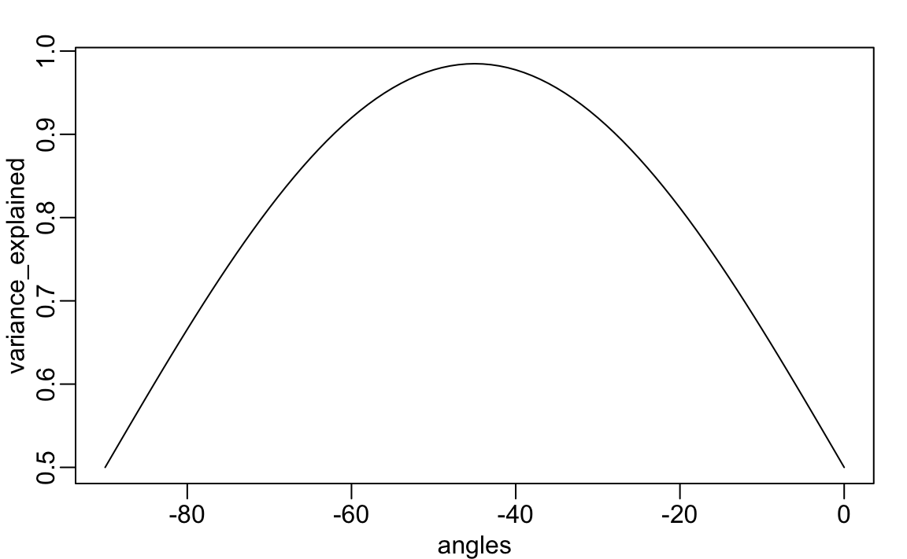
We find that a -45 degree rotation appears to achieve the maximum, with over 98% of the total variability explained by the first dimension. We denote this rotation matrix with \(\mathbf{V}\):
We can rotate the entire dataset using:
\[ \mathbf{Z} = \mathbf{X}\mathbf{V} \]
z <- x %*% VThe following animation further illustrates how different rotations affect the variability explained by the dimensions of the rotated data:

The first dimension of z is referred to as the first principal component (PC). Because almost all the variation is explained by this first PC, the distance between rows in x can be very well approximated by the distance calculated with just z[,1].
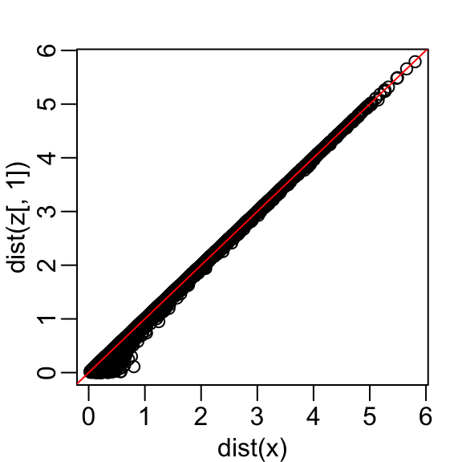
We also notice that the two groups, adults and children, can be clearly observed with the one number summary, better than with any of the two original dimensions.
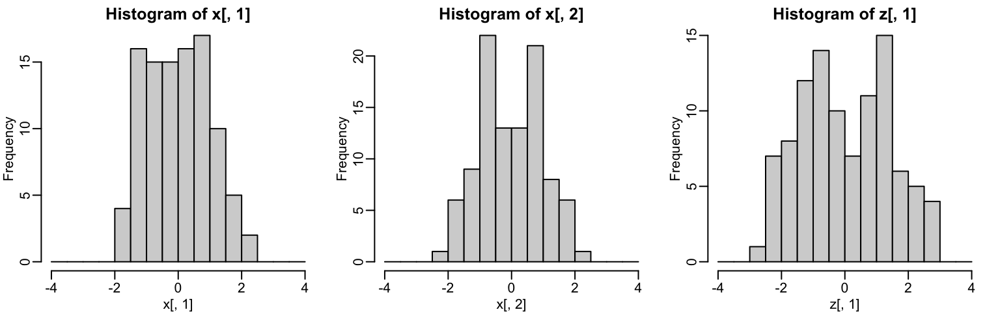
We can visualize these to see how the first component summarizes the data. In the plot below, red represents high values and blue negative values:
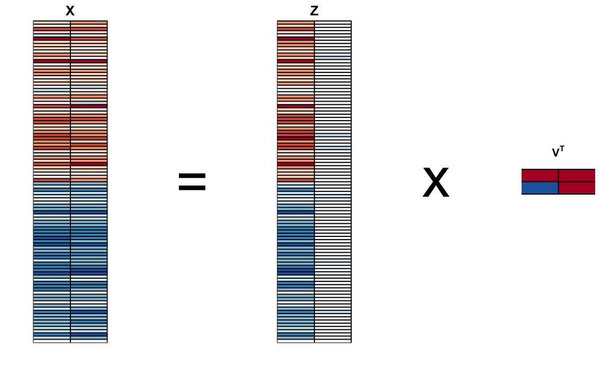
This idea generalizes to dimensions higher than 2. As done in our two dimensional example, we start by finding the \(p \times 1\) vector \(\mathbf{v}_1\) with \(||\mathbf{v}_1||=1\) that maximizes \(||\mathbf{X} \mathbf{v}_1||\). The projection \(\mathbf{X} \mathbf{v}_1\) is the first PC. To find the second PC, we subtract the variation explained by first PC from \(\mathbf{X}\):
\[ \mathbf{r} = \mathbf{X} - \mathbf{X} \mathbf{v}_1 \mathbf{v}_1^\top \]
and then find the vector \(\mathbf{v}_2\) with\(||\mathbf{v}_2||=1\) that maximizes \(||\mathbf{r} \mathbf{v}_2||\). The projection \(\mathbf{X} \mathbf{v}_2\) is the second PC. We then subtract the variation explained by the first two PCs, and continue this process until we have the entire rotation matrix and matrix of principal components, respectively:
\[ \mathbf{V} = \begin{bmatrix} \mathbf{v}_1&\dots&\mathbf{v}_p \end{bmatrix}, \mathbf{Z} = \mathbf{X}\mathbf{V} \]
The ideas of distance preservation extends to higher dimensions. For a multidimensional matrix with \(p\) columns, the \(\mathbf{A}\) transformation preserves the distance between rows, but with the variance explained by the columns in decreasing order.If the variances of the columns \(\mathbf{Z}_j\), \(j>k\) are very small, these dimensions have little to contribute to the distance calculation and we can approximate the distance between any two points with just \(k\) dimensions. If \(k\) is much smaller than \(p\), then we can achieve a very efficient summary of our data.
Notice that the solution to this maximization problem is not unique because \(||\mathbf{X} \mathbf{v}|| = ||-\mathbf{X} \mathbf{v}||\). Also, note that if we multiply a column of \(\mathbf{A}\) by \(-1\), we still represent \(\mathbf{X}\) as \(\mathbf{Z}\mathbf{V}^\top\) as long as we also multiple the corresponding column of \(\mathbf{V}\) by -1. This implies that we can arbitrarily change the sign of each column of the rotation \(\mathbf{V}\) and principal component matrix \(\mathbf{Z}\).
In R, we can find the principal components of any matrix with the function prcomp:
pca <- prcomp(x, center = FALSE)Keep in mind that default behavior is to center the columns of x before computing the PCs, an operation we don’t need because our matrix is scaled.
The object pca includes the rotated data \(Z\) in pca$x and the rotation \(\mathbf{V}\) in pca$rotation.
We can see that columns of the pca$rotation are indeed the rotation obtained with -45 (remember the sign is arbitrary):
pca$rotation
#> PC1 PC2
#> [1,] -0.707 0.707
#> [2,] -0.707 -0.707The square root of the variation of each column is included in the pca$sdev component. This implies we can compute the variance explained by each PC using:
pca$sdev^2/sum(pca$sdev^2)
#> [1] 0.9848 0.0152The function summary performs this calculation for us:
summary(pca)
#> Importance of components:
#> PC1 PC2
#> Standard deviation 1.403 0.1745
#> Proportion of Variance 0.985 0.0152
#> Cumulative Proportion 0.985 1.0000We also see that we can rotate x (\(\mathbf{X}\)) and pca$x (\(\mathbf{Z}\)) as explained with the mathematical formulas above:
22.6 Examples
22.6.1 Iris example
The iris data is a widely used example in data analysis courses. It includes four botanical measurements related to three flower species:
names(iris)
#> [1] "Sepal.Length" "Sepal.Width" "Petal.Length" "Petal.Width"
#> [5] "Species"If you print iris$Species, you will see that the data is ordered by the species.
If we visualize the distances, we can clearly see the three species with one species very different from the other two:
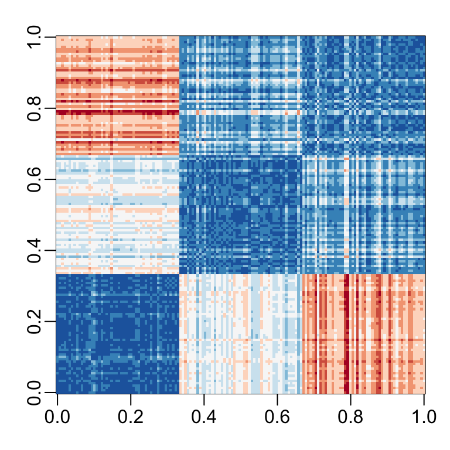
Our features matrix has four dimensions, but three are very correlated:
cor(x)
#> Sepal.Length Sepal.Width Petal.Length Petal.Width
#> Sepal.Length 1.000 -0.118 0.872 0.818
#> Sepal.Width -0.118 1.000 -0.428 -0.366
#> Petal.Length 0.872 -0.428 1.000 0.963
#> Petal.Width 0.818 -0.366 0.963 1.000If we apply PCA, we should be able to approximate this distance with just two dimensions, compressing the highly correlated dimensions. Using the summary function, we can see the variability explained by each PC:
The first two dimensions account for almost 98% of the variability. Thus, we should be able to approximate the distance very well with two dimensions. We confirm this by computing the distance from first two dimensions and comparing to the original:
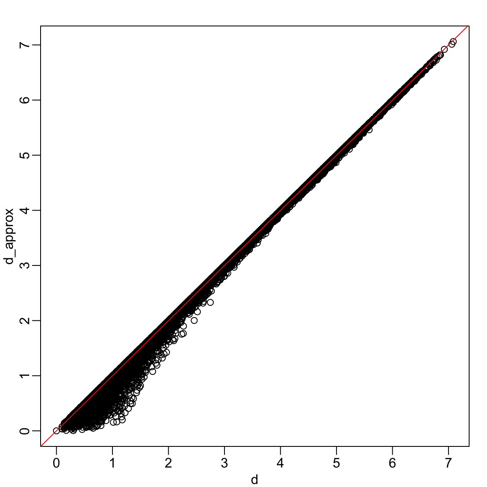
A useful application of this result is that we can now visualize the distance between each observation with a two-dimensional plot.
data.frame(pca$x[,1:2], Species = iris$Species) |>
ggplot(aes(PC1, PC2, fill = Species)) +
geom_point(cex = 3, pch = 21) +
coord_fixed(ratio = 1)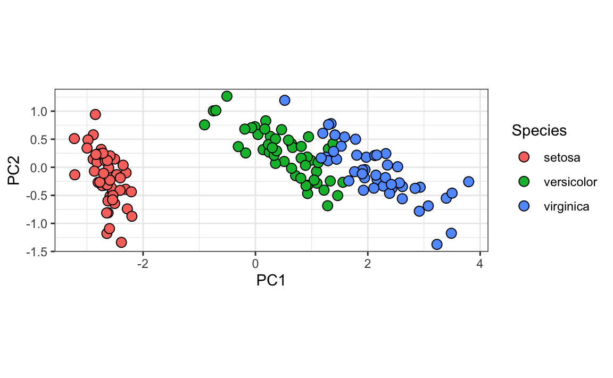
We color the observations by their labels and notice that, with these two dimensions, we achieve almost perfect separation.
Looking more closely at the resulting PCs and rotations:
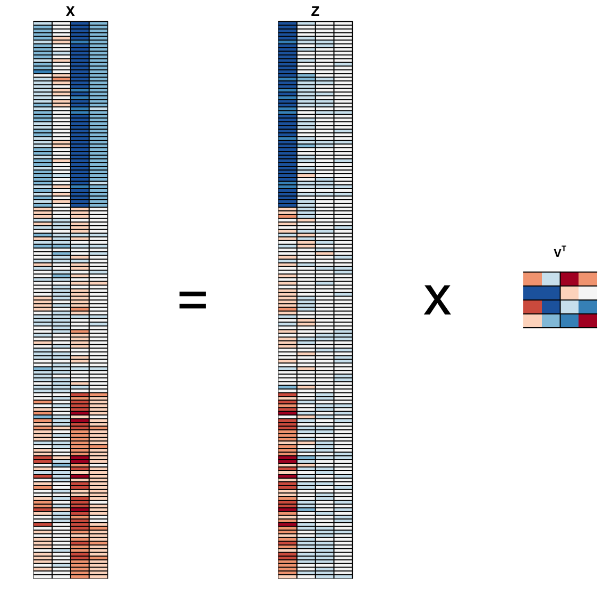
we learn that the first PC is obtained by taking a weighted average of sepal length, petal length, and petal width (red in first column), and subtracting a a quantity proportional to sepal width (blue in first column). The second PC is a weighted average of petal length and petal width, minus a weighted average of sepal length and petal width.
22.6.2 MNIST example
The written digits example has 784 features. Is there any room for data reduction? We will use PCA to answer this.
If not already loaded, let’s begin by loading the data:
library(dslabs)
if (!exists("mnist")) mnist <- read_mnist()Because the pixels are so small, we expect pixels close to each other on the grid to be correlated, meaning that dimension reduction should be possible.
Let’s compute the PCs. This will take a few seconds as it is a rather large matrix:
pca <- prcomp(mnist$train$images)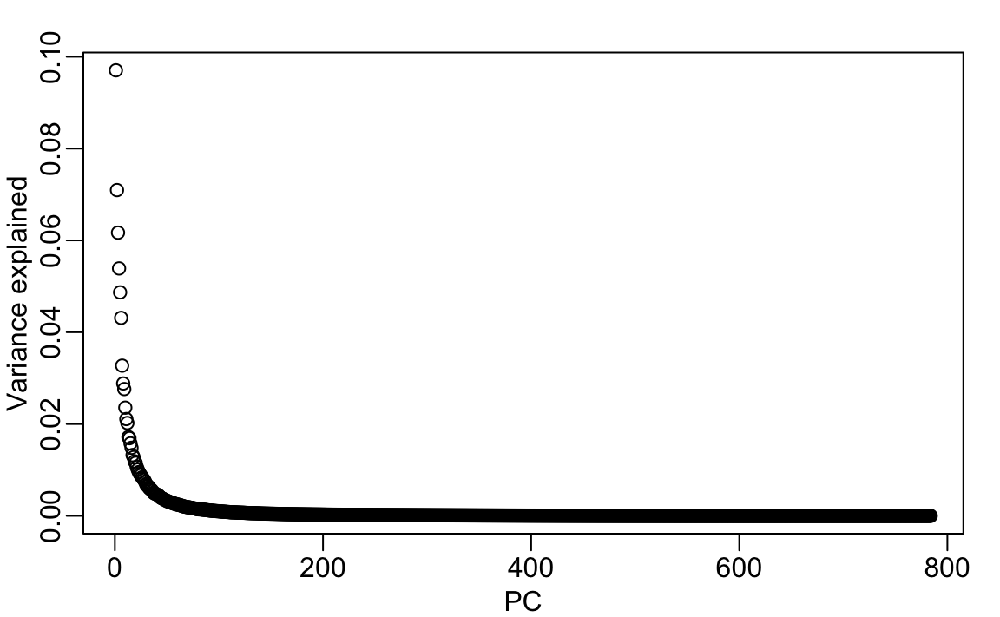
We can see that the first few PCs already explain a large percent of the variability.
Simply by looking at the first two PCs we already see information about the labels. Here is a random sample of 500 digits:
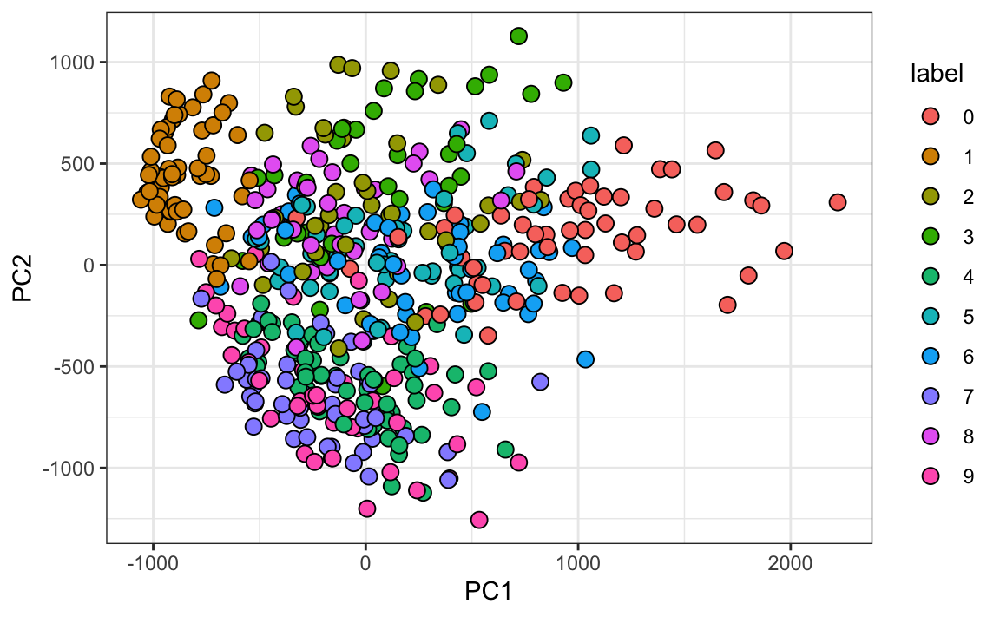
We can also see the rotation values on the 28 \(\times\) 28 grid to get an idea of how pixels are being weighted in the transformations that result in the PCs:
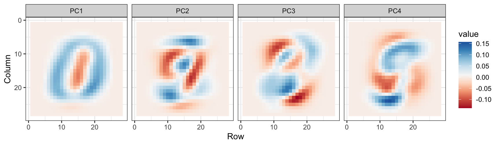
We can clearly see that first PC appears to be separating the 1s (red) from the 0s (blue). We can vaguely discern digits, or parts of digits, in the other three PCs as well. By looking at the PCs stratified by digits, we get further insights. For example, we see that the second PC separates 4s, 7s, and 9s from the rest:
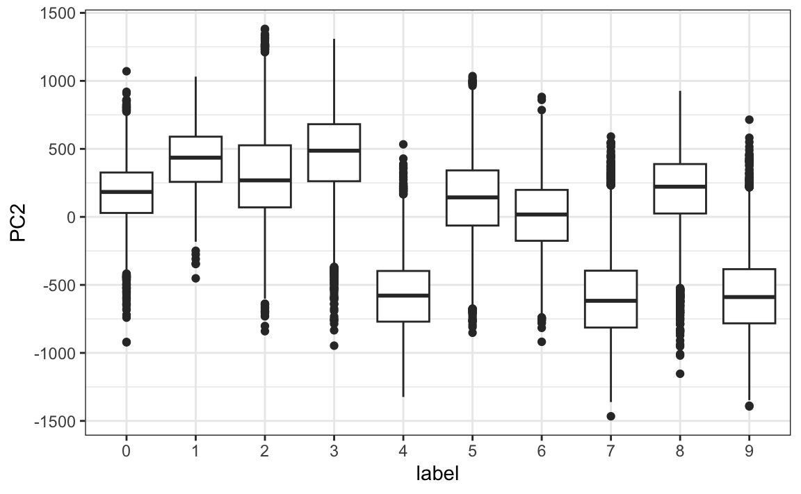
We can also confirm that the lower variance PCs appear related to unimportant variability, mainly smudges in the corners:
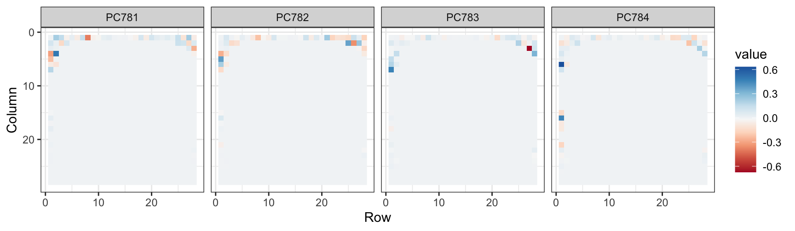
22.7 Exercises
1. We want to explore the tissue_gene_expression predictors by plotting them.
dim(tissue_gene_expression$x)We hope to get an idea of which observations are close to each other, but the predictors are 500-dimensional so plotting is difficult. Plot the first two principal components with color representing tissue type.
2. The predictors for each observation are measured on the same measurement device (a gene expression microarray) after an experimental procedure. A different device and procedure is used for each observation. This may introduce biases that affect all predictors for each observation in the same way. To explore the effect of this potential bias, for each observation, compute the average across all predictors and then plot this against the first PC with color representing tissue. Report the correlation.
3. We see an association with the first PC and the observation averages. Redo the PCA, but only after removing the center.
4. For the first 10 PCs, make a boxplot showing the values for each tissue.
5. Plot the percent variance explained by PC number. Hint: Use the summary function.